O Recomeço da Franquia (2006)
Lançado originalmente em 2006 para o PlayStation 2, Persona 3 revolucionou a franquia e redefiniu o gênero dos JRPGs. Foi o título responsável por introduzir a famosíssima fórmula de simulação social combinada com exploração de masmorras, envelopada em uma atmosfera que debate diretamente o conceito de mortalidade (Memento Mori).
A história acompanha um estudante órfão que se transfere para a escola Gekkoukan High School, localizada na ilha artificial de Tatsumi Port Island. Pouco após sua chegada, ele descobre que forças sobrenaturais e terríveis estão se alimentando da mente da população local.
A Dark Hour e o Tartarus
Escondida entre um dia e outro, exatamente à meia-noite, existe uma hora secreta que pessoas normais não conseguem perceber: a Dark Hour. Durante esse período, o mundo se transforma em um cenário verdejante e macabro, eletrônicos param de funcionar e os humanos viram caixões inertes. É nesse momento que criaturas chamadas Shadows caçam os poucos que permanecem conscientes.
Para piorar, a própria escola Gekkoukan se distorce na Dark Hour, transformando-se em uma colossal e assustadora torre labiríntica chamada Tartarus. Para combater essa ameaça, o protagonista se junta ao SEES (Specialized Extracurricular Execution Squad), um grupo de estudantes que usa disparadores em formato de armas (os Evokers) na própria cabeça para despertar o poder de suas Personas.
Pilares do Jogo
Social Links (Vínculos)
A grande estreia do sistema! Durante o dia, você deve gerenciar sua rotina de estudante, fazer amigos e criar laços com NPCs. Quanto mais forte for a sua amizade, mais poderosas serão as Personas que você pode fundir na Velvet Room.
O Sistema de Evokers
Refletindo a temática pesada de aceitação da morte, os personagens manifestam suas Personas atirando contra a própria cabeça com um Evoker. Essa força de vontade gera um dos designs visuais mais marcantes da história dos games.
Gerenciamento de Tempo
Cada dia conta. Você precisa escolher entre estudar para as provas, aumentar seus atributos sociais (Charme, Coragem e Acadêmicos), passar tempo com amigos ou arriscar a sanidade explorando a torre Tartarus à noite.
Membros do SEES
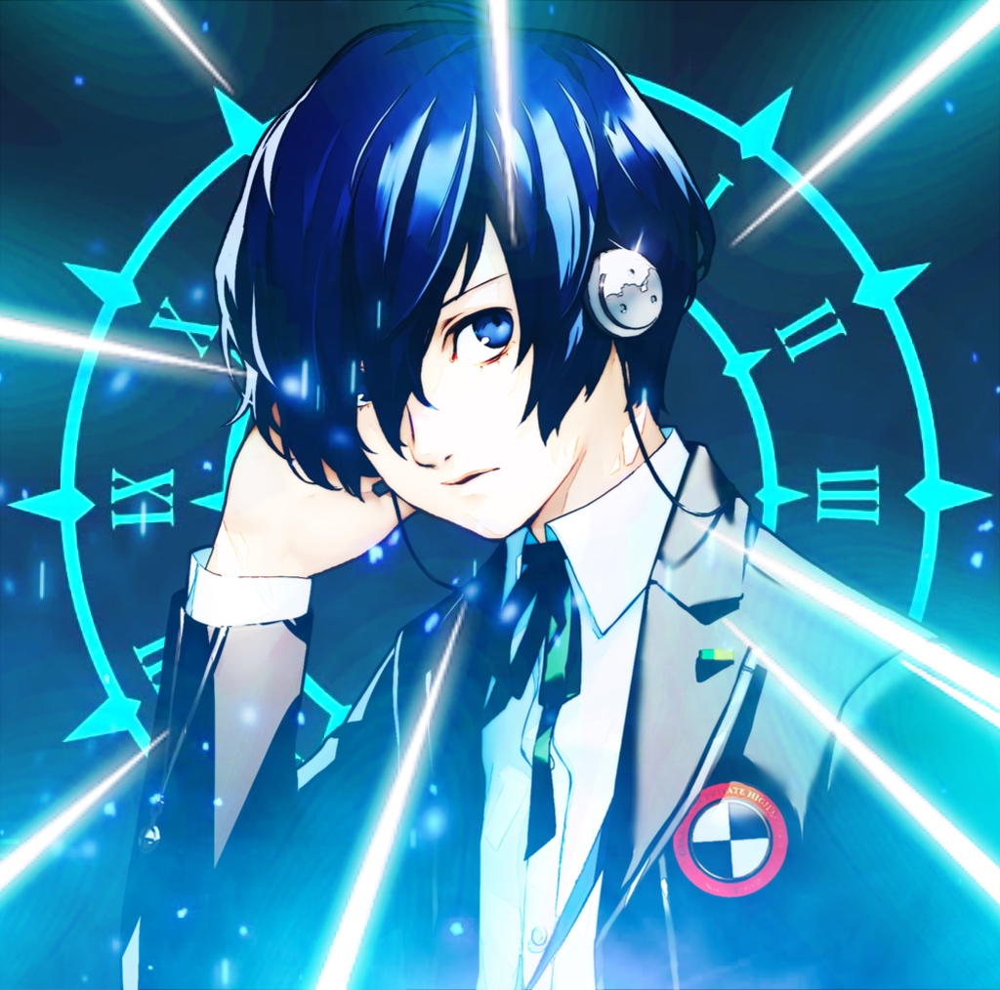
Makoto Yuki (Protagonista)
O protagonista apático da campanha principal.
Carrega sempre seus fones de ouvido e possui o poder da Wild Card, permitindo-lhe carregar múltiplas Personas.
Sua Persona inicial é Orpheus.
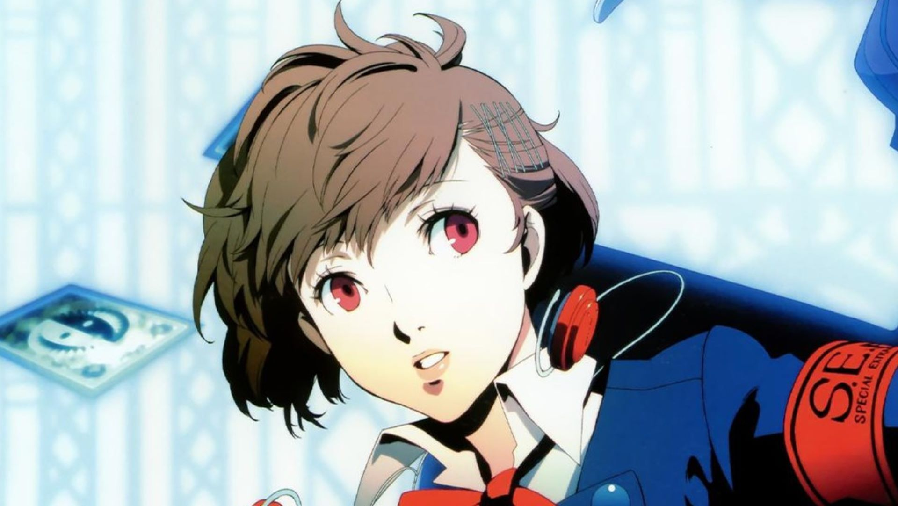
Kotone Shiomi (Femc)
A protagonista exclusiva da versão Portable.
Ao contrário de Makoto, ela é enérgica, super alegre e sociável,
trazendo trilhas sonoras e Social Links completamente novos.
Sua Persona inicial também é Orpheus.
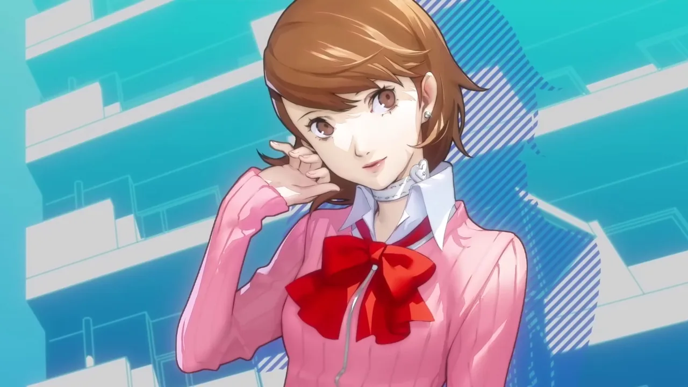
Yukari Takeba
Colega de classe do protagonista e membra do clube de arco e flecha.
Apesar de popular, ela esconde traumas sobre o passado de seu falecido pai, um cientista da corporação Kirijo.
Sua Persona é Io.
Junpei Iori
O piadista e melhor amigo do herói.
Inicialmente age de forma imatura e sente inveja do protagonismo do líder,
mas amadurece drasticamente após se apaixonar pela misteriosa Chidori.
Sua Persona é Hermes.
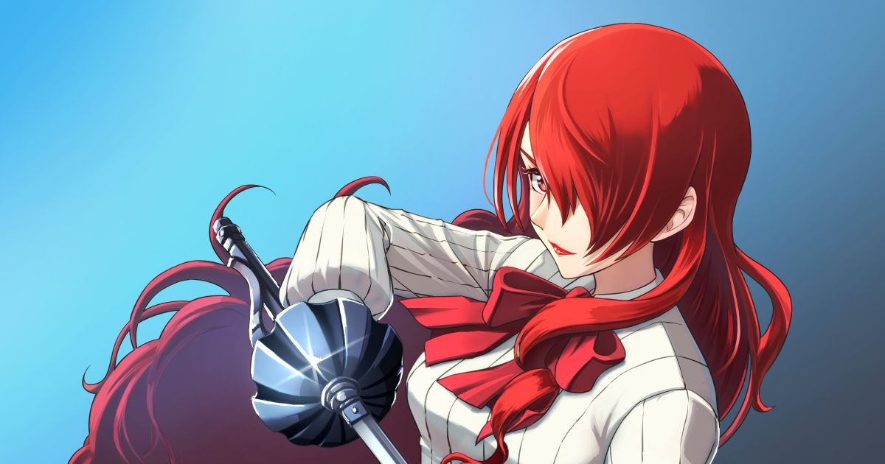
Mitsuru Kirijo
Herdeira do bilionário Grupo Kirijo e presidente do conselho estudantil.
É a fundadora original e mente tática por trás do SEES, liderando o grupo com elegância e severidade.
Sua Persona é Penthesilea.
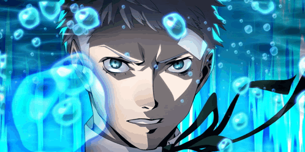
Akihiko Sanada
Veterano do terceiro ano e capitão do clube de boxe.
Viciado em treinar e consumir proteínas, ele luta na Dark Hour usando seus próprios punhos para superar a frustração de perdas do passado.
Sua Persona é Polydeuces.
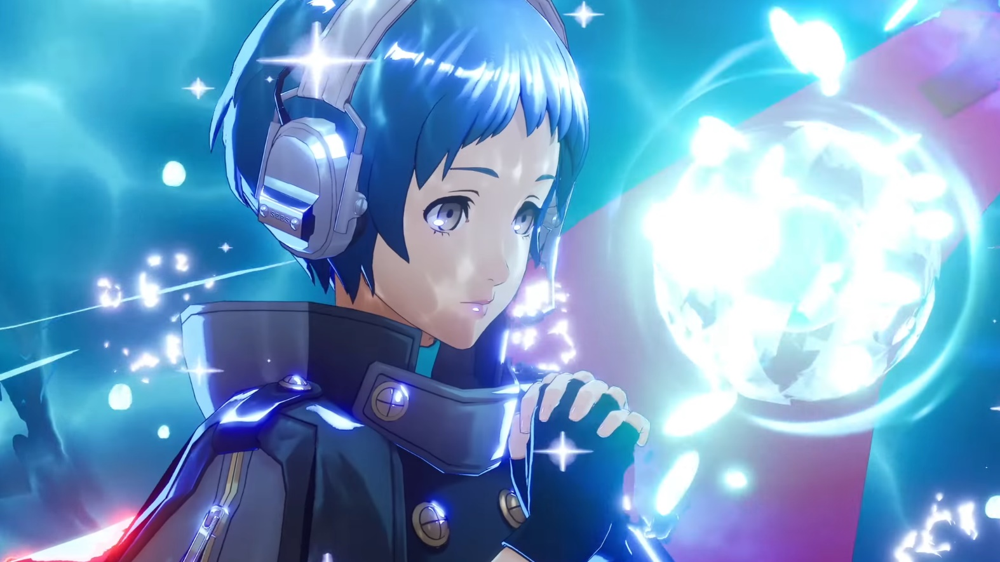
Fuuka Yamagishi
Uma garota tímida e gentil que sofria bullying na escola.
Ela assume o papel de navegadora tática do SEES dentro do Tartarus devido aos seus incríveis poderes de rastreamento psíquico.
Sua Persona é Lucia.
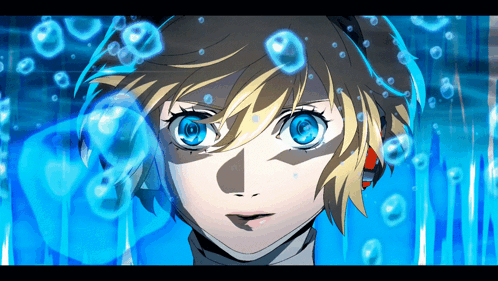
Aigis
Uma androide de combate anti-Shadow com inteligência artificial desenvolvida pela Kirijo.
Ela possui uma obsessão inexplicável em proteger o protagonista e gradualmente desenvolve emoções humanas.
Sua Persona é Palladion.
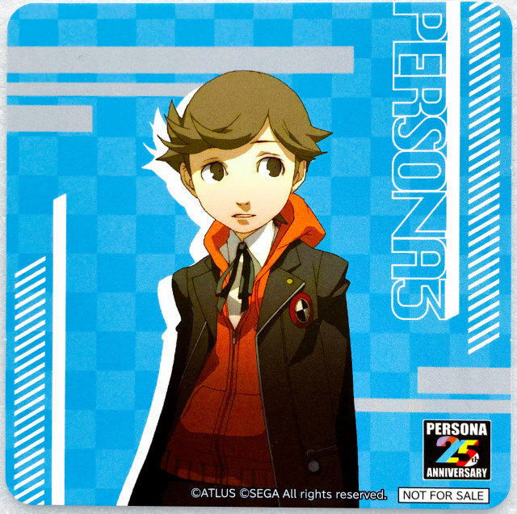
Ken Amada
O membro mais jovem do SEES, ainda no ensino fundamental.
Apesar da pouca idade, ele age como um adulto maduro para esconder seu plano secreto de vingar a morte de sua mãe.
Sua Persona é Nemesis.
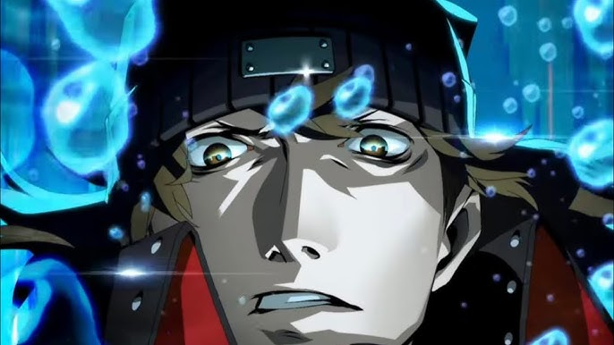
Shinjiro Aragaki
Ex-membro do SEES e amigo de infância de Akihiko.
Vive isolado nas ruas e usa supressores químicos perigosos para controlar sua Persona instável.
Tem uma postura rústica, mas um coração mole.
Sua Persona é Castor.
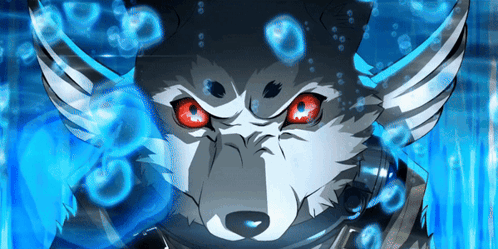
Koromaru
Um fiel cão da raça Shiba Inu que ganhou a habilidade de invocar uma Persona após defender seu templo de um ataque Shadow. É extremamente leal e inteligente, lutando com uma faca na boca. Sua Persona é Cerberus.
Guia de Plataformas & Mídias Expandidas
PlayStation 2 (Original / FES)
A estreia que redefiniu a franquia em 2006. A versão expandida Persona 3 FES (2007) adicionou um epílogo jogável de 30 horas focado na Aigis chamado "The Answer", além de novos eventos e Social Links.
PSP & Portes Modernos (Portable)
Adaptado para formato de Visual Novel em 2009. Compensou os cortes gráficos inserindo a inédita Protagonista Feminina (Kotone), controle total dos aliados em batalha e novas trilhas sonoras. Ganhou portes em HD para consoles modernos em 2023.
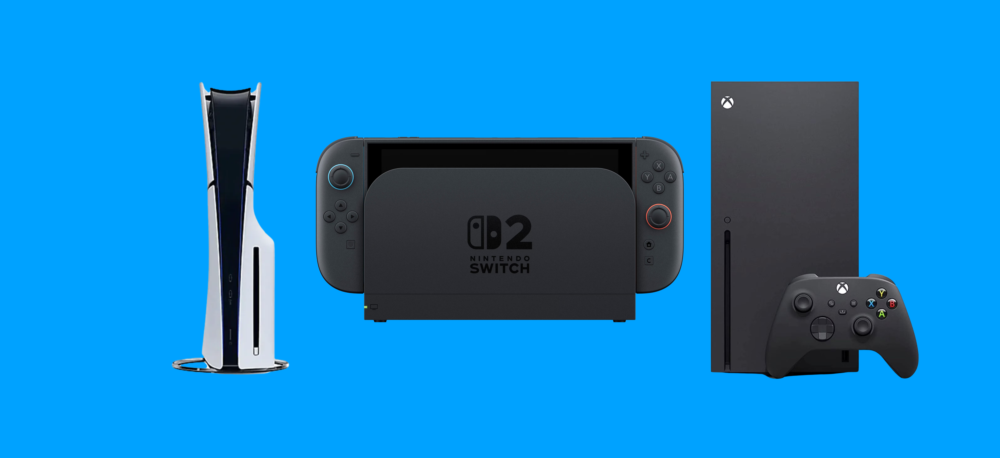
Multiplataforma (Reload)
O remake definitivo construído na Unreal Engine em 2024. Traz gráficos e interface deslumbrantes, dublagem completa, novas mecânicas de combate (Theurgy), e o epílogo "Episode Aigis -The Answer-" totalmente refeito por DLC.
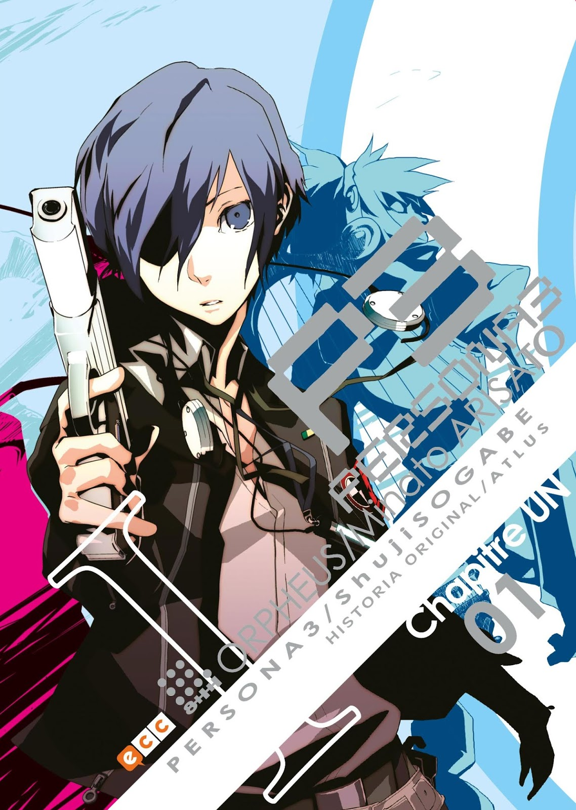
Mangá Oficial (Shuuji Sogabe)
A espetacular adaptação oficial em quadrinhos. O mangá detalha muito mais os pensamentos internos do protagonista (batizado aqui como Minato Arisato), expande arcos de personagens secundários e entrega artes incríveis de combates e das Personas.
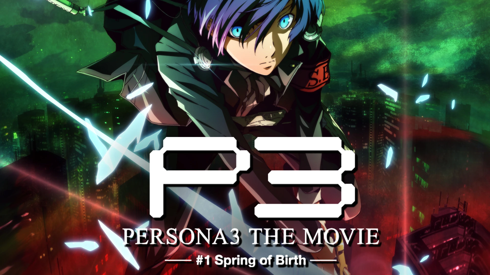
Série de Filmes (4 Longas-Metragens)
Uma tetralogia cinematográfica produzida pela AIC ASTA e A-1 Pictures. Dividida em quatro partes representando as estações do ano (Spring of Birth, Midsummer Knight's Dream, Falling Down e Winter of Rebirth), reconta toda a jornada com uma animação linda de cinema.
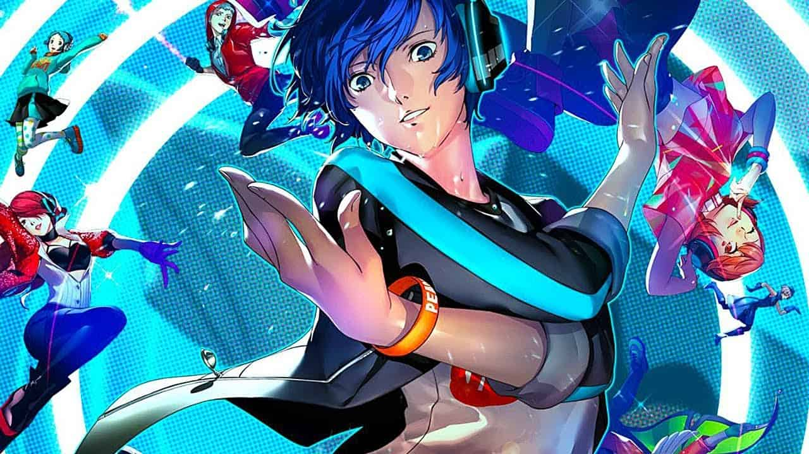
Jogos Derivados (Spin-offs)
O elenco do SEES também brilha em outros gêneros! Eles são peças centrais nos jogos de luta Persona 4 Arena / Ultimax (onde aparecem mais velhos) e no jogo de ritmo e dança Persona 3: Dancing in Moonlight para PS4 e PS Vita.
Galeria de Imagens